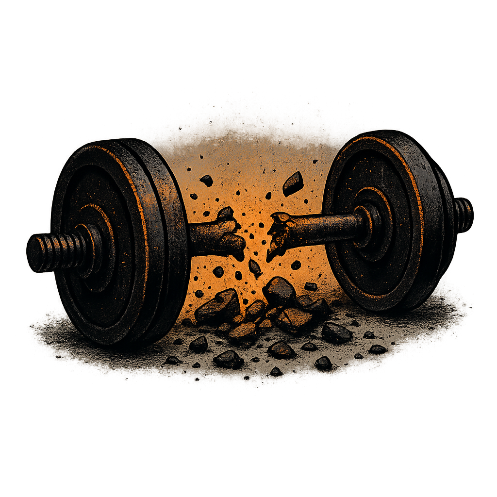
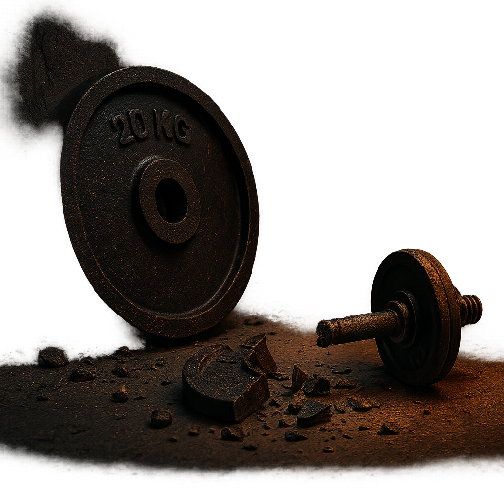

CHLAP A SELHÁNÍ JAK SE ZVEDNOUT, KDYŽ PADNEŠ TVRDĚ

Nikdo o tom nemluví. Ale každý chlap někdy padne. Tvrdě. Tak, že mu to vezme dech. Možná se mu rozpadne vztah. Možná přijde o peníze, o práci, o důvěru. Možná něco posere tak, že to bude cítit ještě roky. A to bolí. Ego, duši, tělo. Ale nejvíc to zasáhne hrdost.
V tu chvíli máš dvě možnosti. Buď se zhroutíš, nebo začneš stavět z trosek. Není to příjemné. Ale právě v tom je ten rozdíl mezi chlapem a klukem. Kluk čeká, že ho někdo zvedne. Chlap se zvedá sám.
Chlap a selhání – to není konec.
Je to zrcadlo.
Selhání ti nastaví realitu. Bez filtru. Ukáže ti, jaký fakt jsi. Ne jaký bys chtěl být, ne jaký se děláš na Instagramu. Ale co doopravdy zvládneš, co ještě nezvládáš, co si jen namlouváš. Je to syrové, ale pravdivé.
Když selžeš, ztratíš iluzi. A to je dar. Protože můžeš konečně začít něco budovat na pevném základu, ne na bublině.
Začni s tím, co ovládáš – sám se sebou
Všichni mají tendenci ukazovat prstem. Na svět, na ženské, na ekonomiku, na cokoliv. Ale pokud se chceš zvednout, musíš se podívat dovnitř. Selhal jsi? OK. Tak co jsi přehlídl? Co jsi podcenil? Čeho ses bál? Proč jsi nejednal jinak?
Tohle není seberozbíjení. To je poctivá inventura chlapa, co nechce zůstat v prachu. A ta začíná tím, že přijmeš odpovědnost. Bez výmluv. Bez keců.
Když padneš, dělej opak toho, co tě tam dostalo
Spadls kvůli lenosti? Začni makat. Zničil tě strach? Začni dělat věci, ze kterých máš respekt. Přišel jsi o vztah, protože jsi byl slabý nebo pasivní? Přestaň se litovat a začni budovat sebe.
Každý pád má svou příčinu. A ta příčina není tam venku. Je v tobě. A to je dobrá zpráva. Protože to znamená, že s tím můžeš něco dělat.
Přestaň čekat, že se to zlepší samo
Nikdo za tebe nepřijde a neřekne: „Hele, vím, že jsi selhal, tady máš druhou šanci.“ To neexistuje. Druhou šanci si musíš vzít. Vstát, seškrábat zbytky sebeúcty a začít znovu. Možná s holýma rukama. Možná sám. Ale začít.
A čím dřív to uděláš, tím líp. Protože čím déle zůstaneš ležet, tím víc si na to zvykneš. A z chlapa se stane stín. A ten pak jen sleduje život jiných. Z okna. Z gauče. Od porna. Z výmluv.
Každý pád je lekce.
Když ji projdeš, zvedneš level
Chlap, co nikdy nepadl, nemá hloubku. Je křehký. Neví, co to je ztratit a postavit se znovu. Takový chlap není stabilní. Ale ty, když projdeš selháním a zvládneš ho ustát, získáváš sílu, kterou ti nikdo nevezme.
A to se promítne všude. V tom, jak mluvíš. Jak se díváš druhým do očí. Jak jednáš. Opravdovost se nedá nahrát. Ta buď je, nebo není. A vzniká právě v těchto momentech.
Vstaň. Ale jinak než předtím
Nejde jen o to se zvednout. Jde o to, abys byl po tom pádu jiný. Ne silou vůle, ale vědomě. Jinak jednáš. Jinak plánuješ. Jinak věříš. Jinak mluvíš s lidmi. A hlavně – jinak mluvíš sám se sebou.
Z toho vnitřního chaosu se musíš vyhrabat postupně. Začni malým řádem. Ranním vstáváním. Cvičením. Studenou sprchou. Časem osekáš balast a zjistíš, že jsi znovu chlap, co stojí pevně na nohou.
Nejsi to, co se ti stalo.
Jsi to, co s tím uděláš
Na tom, že padneš, není nic výjimečného. To se stane každému. Výjimečný je způsob, jak se s tím vyrovnáš. Budeš zpruzený, zahořklý, zlomený? Nebo budeš držet hubu a makat? Vykašleš se na svoje vize? Nebo je přehodnotíš a půjdeš dál s menšíma iluzema, ale větší odhodlaností?
Tohle je tvoje volba. A přesně v tomhle bodě se rodí síla. Ne v posilce. Ne v citátu. Ale v rozhodnutí vstát a udělat krok. A pak další. A pak ještě jeden. I když bolí.

Selhání tě může zničit. Nebo přetavit
Volba je tvoje. Vždycky byla. Nezáleží na tom, co si o tobě myslí ostatní. Nezáleží, jak moc jsi to posral. Dokud dýcháš, můžeš jednat. A pokud jednáš vědomě, rosteš.
Takže pokud jsi právě na dně, pamatuj: nejsi sám. Ale taky – nikdo tě nezachrání. A to je dobrá zpráva. Protože jakmile to přijmeš, máš zpátky kontrolu.
Přijmi selhání jako součást vývoje.
A pokračuj
Tohle není konečná. Je to fáze. A stejně jako každá bolest svalů, i tohle přejde. Pokud to nevzdáš. Pokud to přežiješ. A pokud z toho uděláš novou verzi sebe, silnější, opravdovější, tvrdší.
To je cesta mimo trasu.